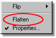
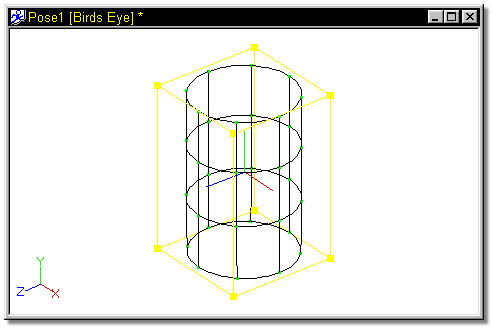
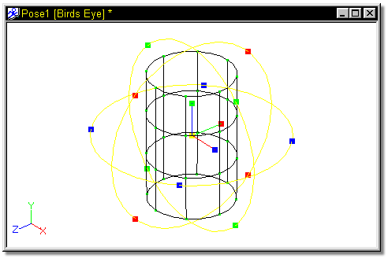
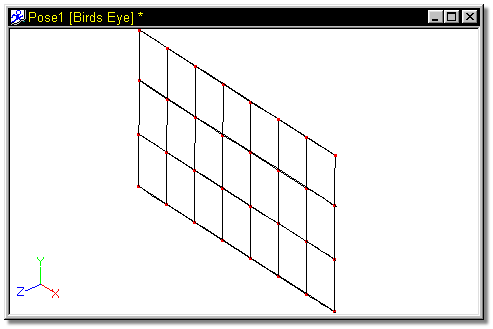

There is a subtle secret to keep in mind while your are applying Decals:
Decals do not care how the model is shaped during application. With that in mind,
it is possible to flatten, or unwrap, and object before applying decals. This
method also comes in handy in creating decals, since an object can first be
flattened, then a decal created from the flattened template.
There is a subtle secret to keep in mind while your are applying Decals:
Decals do not care how the model is shaped during application. With that in mind,
it is possible to flatten, or unwrap, and object before applying decals. This
method also comes in handy in creating decals, since an object can first be
flattened, then a decal created from the flattened template.
Flatten is a function of Action, and is best performed as a Pose. Therefore, make a new Pose, and change to Muscle mode. Use the Group tool to select the part of the model you wish to flatten, then right click the group and select Flatten from the available menu.

The Flattening command uses the Z (blue) axis to draw an invisible cylinder around the selected points which are then split at the Green (Y) axis.

To split the cylinder below, the pivot must be rotate 90 degrees so that the Blue Axis is oriented vertically.

The Rotate Manipulator was clicked, and the pivot was rotated 90 degrees.

The group was right clicked, and Flatten was selected from the pop up menu.

Other Advanced Action Topics:
Action Overloading
Move Frames
Action Properties